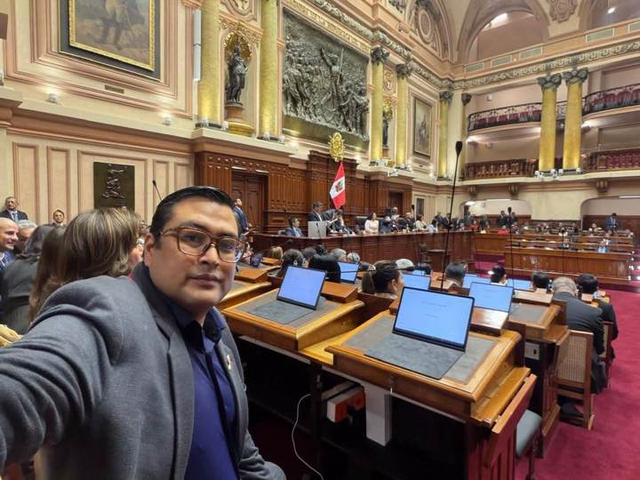
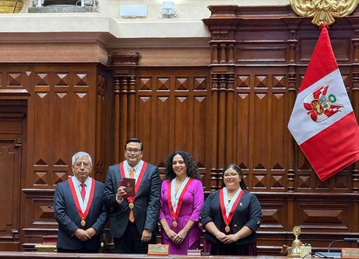
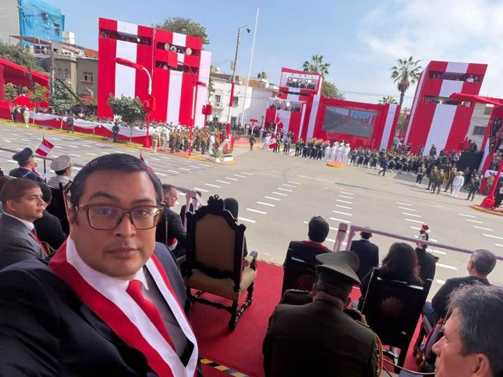
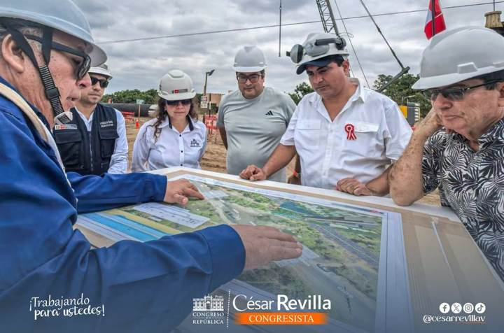
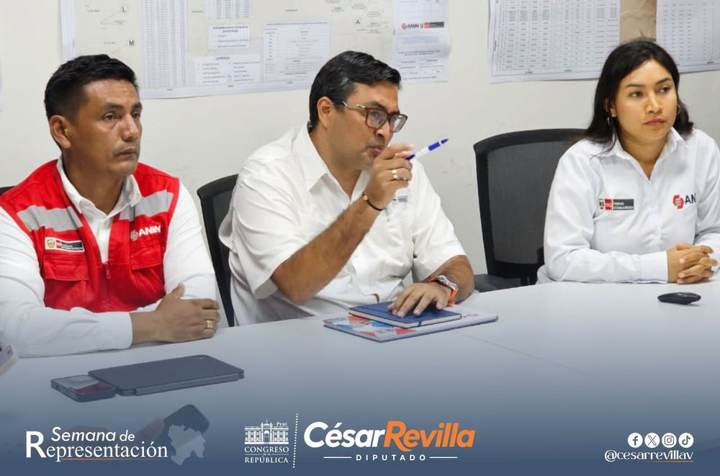
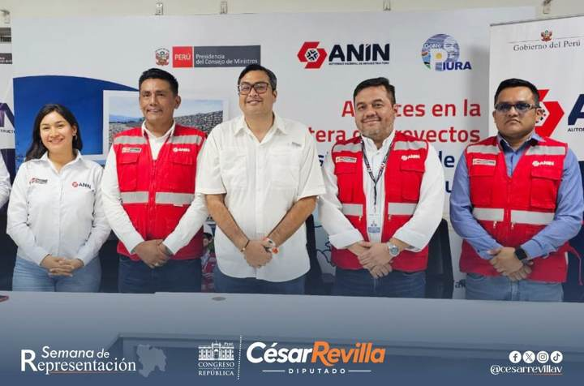

Diputado de la República por Piura · 2026–2031
César Revilla
Diputado de la República y expresidente de la Comisión de Economía del Congreso. Leyes para trabajadores, pensionistas y mypes de todo el Perú, y gestión para Piura frente a El Niño. Todo con su fuente.
A quiénes llegó su trabajo
Ejes de trabajo
Reconstrucción tras el Niño Costero
Presidió la comisión que da seguimiento a la reconstrucción.
Leer →Salud y Hospital de Alta Complejidad
Su postura frente a la exclusión del hospital para Piura.
Leer →Presupuesto regional para Piura
Defensa del presupuesto y sesiones descentralizadas en Piura.
Leer →Lluvias y drenaje pluvial en Piura
Plan integral de drenaje frente al anunciado Fenómeno El Niño.
Leer →Economía, pensiones y empleo
20 leyes desde la Comisión de Economía: AFP, CTS, mypes y Fonavi.
Leer →Seguridad ciudadana y crimen organizado
Presidió la comisión contra el terrorismo y el crimen organizado.
Leer →Educación y universidades
Autor del proyecto que creó la Universidad Nacional de Huancabamba.
Leer →Últimas gestiones documentadas
Sullana: Revilla coordinó la evacuación aérea de una niña a Lima
El despacho de Revilla coordinó con el SAMU y el Ministerio de Defensa el traslado aéreo urgente de una niña desde Sullana al INSN San Borja, en Lima.
Leer →Drenaje pluvial en Piura: Revilla pide un sistema integral ante El Niño
Revilla pidió un sistema integral de drenaje pluvial para Piura tras las lluvias recientes y ante el anunciado Fenómeno El Niño.
Leer →Puente Carnero: Revilla gestiona la descolmatación entre Las Lomas y Tambogrande
Revilla recorrió el puente Carnero y gestionó ante el Midagri y la ANA la intervención de unos siete kilómetros pendientes de descolmatación.
Leer →El Niño 2026: Revilla pidió priorizar la preparación en Piura
En RPP, Revilla sostuvo que faltó prevención y destacó acciones de preparación en Piura, como la descolmatación de un río.
Leer →En el territorio y el Congreso






Guías ciudadanas
Diputados de Piura 2026–2031: quiénes son y cuántos votos obtuvieron
Lista completa, partidos y votos.
Leer →Qué hace un diputado en el Perú: funciones de la Cámara de Diputados
Funciones de la Cámara de Diputados y del Senado.
Leer →Semana de Representación: qué es y cómo se vive en Piura
Qué hacen los parlamentarios cuando vuelven a la región.
Leer →¿Qué ha hecho César Revilla por Piura? Sus principales gestiones
Sus gestiones por Piura, en un solo lugar.
Leer →César Revilla y el Fenómeno El Niño: lo que ha planteado y logrado
Recursos, drenaje y reconstrucción frente a El Niño.
Leer →Cómo pedir información pública a una entidad del Estado en el Perú
Pasos, plazos y costos para pedir información a una entidad.
Leer →Fuerza Popular en el Congreso 2026–2031: cuántos diputados y senadores tiene
Bancada, voceros y representantes de Piura.
Leer →Congreso bicameral del Perú 2026–2031: cómo está conformado
Senadores, diputados y reparto por partido.
Leer →Qué hace un senador en el Perú y en qué se diferencia de un diputado
Funciones del Senado y diferencias con Diputados.
Leer →Pedido de facultades legislativas 2026: qué dijo César Revilla
Su posición sobre el pedido de facultades.
Leer →Cómo se crea una ley en el Perú: del proyecto a la publicación
Los pasos, desde el proyecto hasta El Peruano.
Leer →Lo han entrevistado y citado
- RPP
- El Comercio
- Infobae
- Canal N
- América TV
- Caretas
- Panamericana
- La Razón
- El Tiempo
Preguntas frecuentes
¿Quién es César Revilla?
César Revilla es un cirujano dentista y político peruano, diputado por Piura para el periodo 2026–2031 por Fuerza Popular. Antes fue congresista por Piura en el periodo 2021–2026.
¿Qué comisiones ha presidido?
Presidió la Comisión Especial Multipartidaria de Seguimiento al proceso de Reconstrucción en las zonas afectadas por el Fenómeno del Niño Costero, la Comisión de Economía, Banca, Finanzas e Inteligencia Financiera (2023-2024), la comisión de seguimiento a la Autoridad Nacional de Infraestructura y, en 2025, la comisión contra el terrorismo y el crimen organizado transnacional.
¿Qué logró como presidente de la Comisión de Economía?
Entre 2023 y 2024 la comisión que presidió aprobó 58 dictámenes y logró 20 leyes, entre ellas el retiro de AFP de hasta 4 UIT (Ley 32002), la libre disposición del 100% de la CTS (Ley 32027), el REPRO AFP III (Ley 31888), el marco para devolver el Fonavi y una nueva Ley de Contrataciones del Estado.
¿Qué leyes ha impulsado?
Es autor del Proyecto de Ley 8018/2023-CR, base de la Ley 32162 que crea la Universidad Nacional de Huancabamba, y del PL 2204 sobre el personal de salud CAS COVID, aprobado por el Pleno con 112 votos en 2022.
¿Cuántos votos obtuvo en 2026?
Encabezó la votación regional de Piura con 23,816 votos preferenciales, según El Tiempo.
¿Quiénes son los diputados de Piura 2026–2031?
Piura eligió siete diputados: César Revilla, Eduardo Castillo, Félix Chang, Carmela Paucará, María Silupú, Miguel Huamán y Henry Albañil, más la senadora Karla Schaefer.
¿César Revilla es de Fuerza Popular?
Sí. César Revilla es diputado por Piura de Fuerza Popular para 2026–2031. La bancada tiene 41 de los 130 diputados, según el conteo de la ONPE.
¿Cuántos diputados y senadores tiene Fuerza Popular?
Fuerza Popular tiene 41 diputados y 22 senadores en el Congreso bicameral 2026–2031, la mayor bancada de ambas cámaras, según Infomercado.
¿Qué hace un diputado en el Perú?
Presenta, debate y aprueba leyes, ejerce control político sobre el Ejecutivo y puede admitir e iniciar acusaciones constitucionales. La Cámara tiene 130 diputados.
¿Dónde puedo ver su asistencia y sus votaciones?
En la sección de transparencia de este sitio se enlazan las fuentes oficiales del Congreso donde se publican asistencia, votaciones y proyectos de ley.